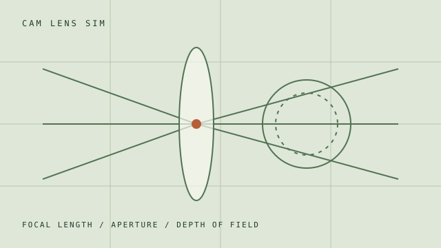
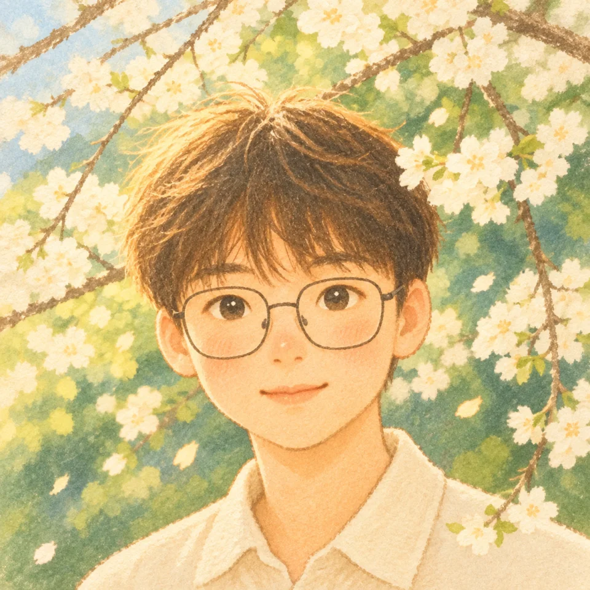
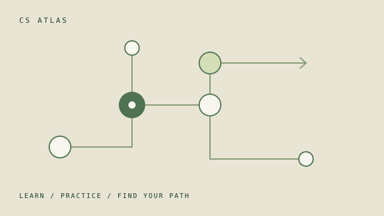
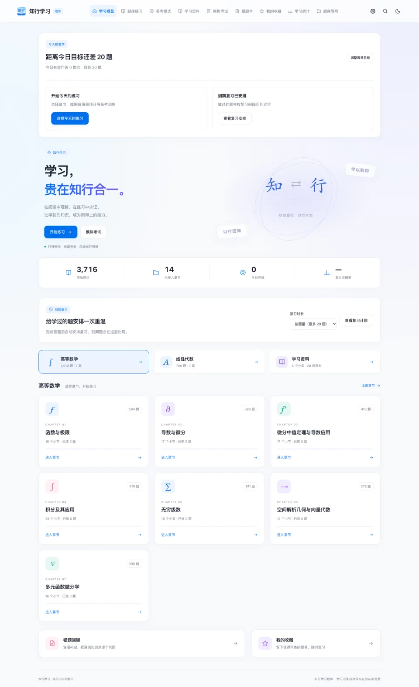

PHOTOGRAPHY / 摄影光学实验室CamLensSim
在浏览器里的三维场景中，调整焦距、光圈与对焦距离，观察视角和景深的变化。

SELF-PORTRAIT01 / ABOUT ME
一个从山城走来的学生，
用镜头和代码，记录自己的观察。
你好，我是 CanoeChen，目前就读于东北大学，家乡是重庆。
摄影是我最主要的业余爱好。猫咪、飞鸟、花草，还有日常里偶然遇见的光，都是我愿意停下脚步、按下快门的理由。
闲下来也会写代码、关注 AI，把学习中遇到的问题做成小工具；偶尔打开赛车游戏，去赛道上兜兜风。
02 / THE JOURNEY
有过开始，也有过暂停。
对代码的兴趣，始终都在。
在信息技术课上第一次接触 Scratch，就此种下对编程的热爱。
重庆市青少年创意编程决赛一等奖曾接触信息学竞赛，尝试用代码解决问题。后来因学业暂时搁置，兴趣却一直留了下来。
现在在东北大学学习，持续关注 AI，探索新技术，把想法慢慢变成实践。
探索进行中03 / PHOTOGRAPHY FIRST
在猫咪、飞鸟与光影之间，
收藏值得停留的日常。
SELECTED MOMENTS
每张停留约 3 秒；点击中间照片可放大，左右预览可翻页，也可在手机上左右滑动。
A LITTLE CORNER OF THE INTERNET
搭建这个个人主页，是想汇集摄影作品与开源项目，
分享镜头里的相遇，也留下一些平凡却珍贵的生活碎片。
04 / OPEN SOURCE
从摄影实验到学习工具，
把自己的实践分享给你。

PHOTOGRAPHY / 摄影光学实验室在浏览器里的三维场景中，调整焦距、光圈与对焦距离，观察视角和景深的变化。

COMPUTER SCIENCE / 计算机学习地图按阶段探索计算机学习路径，结合课程资料、练习与自测，记录自己的学习进度。

LEARNING / 练习与复习结合章节练习、智能备考与间隔复习，把做题、查漏补缺和阅读资料放在一起。
05 / SAY HELLO
聊聊技术、摄影，或是彼此最近的新发现。